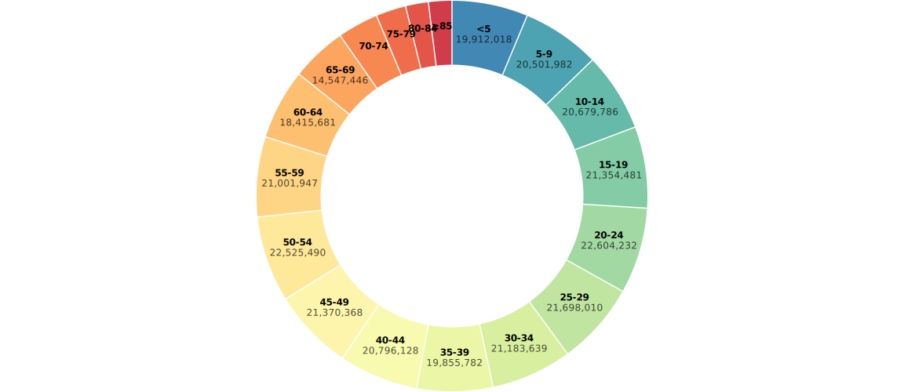
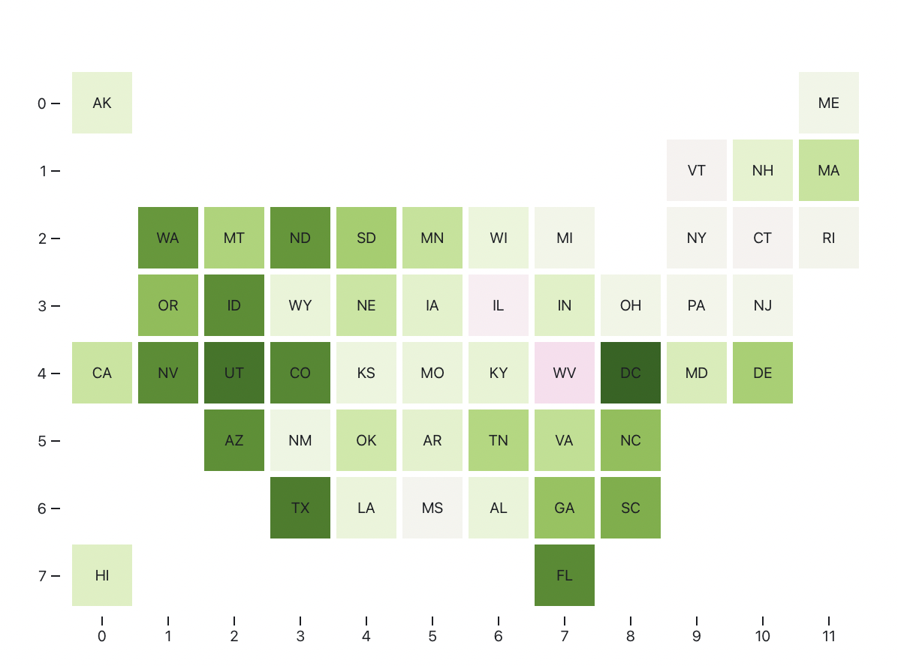
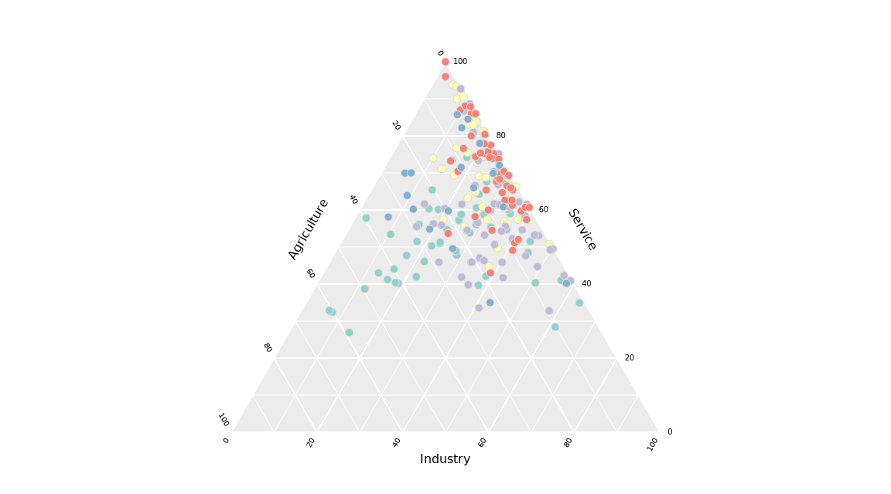

Post
Common charts and graphs
Presenting data in the form of a chart or graph makes identifying patterns and understanding difficult concepts easier. Visualizations of data can bring out insights to someone looking at the data for the first time, as well as convey findings to others who won’t see, or take the time to parse, the raw data.
Deciding on which chart is best for your data will depend on multiple factors, such as:
What are the types of metrics, features, or other variables that you plan on plotting?
Who is the audience that you plan on presenting to – is it just an initial exploration for yourself, or are you presenting to a broader audience?
What is the kind of conclusion that you want the reader to draw?
In this article, we’ll look at frequently used charts and graphs to help you make the best choice for presenting your data.
Alluvial diagram

The alluvial diagram is useful for showing changes over time across categories. The geometry is similar to a stacked area chart but with spacing and order changes. Alluvial diagrams are named after alluvial fans that are naturally formed by the soil deposited from streaming water.
Area chart
Apple Inc. (AAPL) Closing Stock Price
An area graph is a specialized form of the line graph, where data points are connected with a continuous line and the region below that line is filled with a solid color.
World electricity production, by source
A stacked area chart stacks values so that the cumulative area represents 100%. These charts can help to show a progression and composition over time, and the 100% stacked area chart is meant to show the percentage that each component contributes when the cumulative total is not important.
Bar chart
English letter frequency
The classic bar chart. The height (or length) of each bar is proportional to the values that they represent. The baseline starts at zero.
Global Emissions by Country
Barcode chart
Surface temperature anomalies
A compact way to show a distribution, in a barcode chart line segments represent individual data points along a single axis.
Baseline chart
Stock Price Comparison
A baseline chart uses a reference point, which becomes the baseline, to compare all the other categories to. In business, the success of a project or product is often measured against a baseline number for costs, sales, or other variables. A project may exceed a baseline number or fail to meet it.
Beeswarm

A beeswarm chart is a one-dimensional chart- a chart that shows all the information on a single-axis (usually the X axis). It is similar to a strip plot, except that would-be overlapping points are separated such that each is visible.
Box plot
Michaelson-Morley Speed of Light Data
Box plots, also called box-and-whisker plots or box-whisker plots, give a good graphical image of the concentration of the data. A box plot is constructed from five values: the minimum value, the first quartile, the median, the third quartile, and the maximum value. We use these values to compare how close other data values are to them.
Bubble chart
Health and Wealth of Nations, 2007
A bubble chart is a variation of a scatter chart in which the data points are replaced with bubbles, and an additional dimension of the data is represented in the size of the bubbles. Just like a scatter chart, a bubble chart does not use a category axis — both horizontal and vertical axes are value axes. In addition to the x values and y values that are plotted in a scatter chart, a bubble chart also z (size) values.
Bullet chart
Proportion of COVID-19 cases vs. share of population, by race
A Bullet Graph is a variation of a Bar Graph. The main data value is encoded by a length of the main bar in the middle of the chart, known as the Feature Measure. The line marker that runs perpendicular to the orientation of the graph is known as the Comparative Measure and is used as a target marker to compare against the Feature Measure value. So if the main bar has passed the position of Comparative Measure, you know you’ve hit your goal.
Bump chart
Changes in state population, 1920 - 2020

A bump chart is a chart that helps you identify the change in the performance rankings over time rather than the magnitude of the values of the elements (categories).
Cartogram
Who can vote by mail?

Cartograms distort the shape of geographic regions so that the area directly encodes a data variable. A common example is to redraw every country in the world sizing it proportionally to population or GDP. Can be done by circles, squares or distorted maps by manipulating the initial map.
Candlestick Chart
Apple Inc. (AAPL) Stock Price
A candlestick chart is a style of bar-chart used to describe price movements of a security, derivative, or currency for a designated span of time. Each bar represents the range of price movement over a given time interval. The dataset for a candlestick chart contains low, high, open and close values. The high and low values are visualized as the top and bottom of each stick, where the open and close values are reflected in the square inside.
Chord diagram

This type of diagram visualizes the inter-relationships between entities. The connections between entities are used to display that they share something in common. This makes Chord Diagrams ideal for comparing the similarities within a dataset or between different groups of data.
Choropleth map

A choropleth map is simply a shaded map. Specifically, it's a map that uses measured differences in shading or color or the placing of symbols inside defined areas on the map in order to indicate the average values of some property or quantity in those areas. Be careful with your color choices, as they can quickly change what the map shows.
Connected scatter plot
Driving shifts into reverse
A cross between a scatterplot and a time series. Show two variables over time.
Density plot
Unemployment by industry
A density plot visualizes the distribution of data over a continuous interval or time period. This chart is a variation of a histogram that uses kernel smoothing to plot values, allowing for smoother distributions by smoothing out the noise. The peaks of a density plot help display where values are concentrated over the interval.
Difference chart
A difference chart highlights the difference between two values, typically entries vs exits. The amount is encoded as height, and the sign (surplus vs. deficit) as a solid color.
Donut chart 🍩
United States Population, 2015
A donut chart is a pie chart with an area of the center cut out. It looks like a donut. That’s why it’s called a donut chart.
Pie Charts are sometimes criticized for focusing readers on the proportional areas of the slices to one another and to the chart as a whole. This makes it tricky to see the differences between slices, especially when you try to compare multiple Pie Charts together. A Donut Chart somewhat remedies this problem by de-emphasizing the use of the area. Instead, readers focus more on reading the length of the arcs, rather than comparing the proportions between slices.
Dot density map

Dots are placed randomly within regions to show the density of populations. The dots and spacing allow for multiple groups to be shown at once.
Dot map

Dot Maps are a way of detecting spatial patterns or the distribution of data over a geographical region, by placing equally sized points over a geographical region.
Dot plot
Surface temperature anomalies
A generalized form of the scatter plot, the dots can be placed in various coordinate systems on an x- and y-axis. A dot plot is similar to a histogram in that it displays the number of data points that fall into each category or value on the axis, thus showing the distribution of a set of data.
Frequency trails
Google search trends, 2020
Area or line chart value axes overlap to fit more in a space and add another visual aspect to the magnitude of peaks. Also known as a ridgeline chart or a joyplot.
Gantt chart

Commonly used as an organisational tool for project management, Gantt Charts display a list of activities (or tasks) with their duration over time, showing when each activity starts and ends. This makes Gantt Charts useful for planning and estimating how long an entire project might take. You can also see what activities are running in parallel to each other.
Glyph chart
Animals
Symbols are used and various dimensions represent different variables in a dataset.
Grid map
Percent change in population from 2010 to 2019
Instead of using geographic boundaries, same-size cells are used to represent areas to provide equal visual attention to all.
Heatmap

Heatmaps visualize data through variations in colouring. When used in a tabular format, heatmaps are useful for cross-examining multivariate data, through placing variables in the rows and columns and colouring the cells within the table. Heatmaps are good for showing variance across multiple variables, revealing any patterns, displaying whether any variables are similar to each other, and for detecting if any correlations exist in-between them.
Histogram
Apple Inc. (AAPL) Trading Volume
A histogram looks like a bar chart, but it reads differently. The baseline is continuous instead of discrete categories, which allows one to see distributions. Histograms help give an estimate as to where values are concentrated, what the extremes are and whether there are any gaps or unusual values. They are also useful for giving a rough view of the probability distribution.
Horizon graph

A horizon chart is like a combination area chart and heatmap. Shrink the area chart by slicing it horizontally, and then shift the slices to a baseline of zero.
Line chart
My excitement levels as my girlfriend says...
Typically used to show trends over time, the slope of the line between two points shows patterns of change. Line Graphs are drawn by first plotting data points on a Cartesian coordinate grid, then connecting a line between all of these points. Typically, the y-axis has a quantitative value, while the x-axis is a timescale or a sequence of intervals. Negative values can be displayed below the x-axis.
The direction of the lines on the graph works as a nice metaphor for the data: an upward slope indicates where values have increased and a downward slope indicates where values have decreased. The line's journey across the graph can create patterns that reveal trends in a dataset. When grouped with other lines (other data series), individual lines can be compared to one another. However, avoid using more than 3-4 lines per graph, as this makes the chart more cluttered and harder to read. A solution to this is to divide the chart into smaller multiples (have a small Line Graph for each data series).
Mosaic plot

Also known as a Marimekko diagram, this chart uses the width and height of rectangles to represent separate variables. It can be useful to represent multidimensional data. The main flaws of Marimekko charts are that they can be hard to read, especially when there are many segments. Also, it’s hard to accurately make comparisons between each segment, as they are not all arranged next to each other along a common baseline. Therefore, Marimekko charts are better suited for giving a more general overview of the data.
Network graph
The complete ARPANET, December 1969
This type of visualization shows how things are interconnected through the use of nodes / vertices and link lines. Typically, nodes are drawn as dots or circles, but icons can also be used. Links are usually displayed as lines connecting nodes. However, in more elaborate network diagrams, not all of the nodes and links are created equally: additional variables can be shown by making the node size or link stroke weight proportional to an assigned value.
Organogram

An organogram is an organizational chart that shows the structure of an organization and the relationships and relative ranks of its parts and positions/jobs. A variation is a tree diagram, which shows the different elements of a field of knowledge or a group of languages.
Packed bubble chart

Circle size represents data like with a bubble chart, but there is typically no x-y axis. Instead, bubble position often represents grouping or is used to maximize space.
Parallel coordinates

In a parallel coordinates plot, each variable is given its own axis and all the axes are placed in parallel to each other. Each axis can have a different scale, as each variable works off a different unit of measurement, or all the axes can be normalized to keep all the scales uniform. Values are plotted as a series of lines that connected across all the axes. This means that each line is a collection of points placed on each axis, that have all been connected together.
Parallel Coordinates Plots are ideal for comparing many variables together and seeing the relationships between them. For example, if you had to compare an array of products with the same attributes (comparing computer or cars specs across different models).
Parallel sets

Parallel Set charts are similar to Sankey Diagrams in the way they show flow and proportions. However, Parallel Sets don’t use arrows and they divide the flow-path at each displayed line-set. Each line-set corresponds to a dimension/dataset, which its values/categories are represented in each line divide in that line-set. The width of each line and the flow-path that stems from it is determined by the proportional fraction of the category total. Each flow-path can be colored to show and compare the distribution between different categories.
Pictogram
Phish set list, NYE 2019

Pictogram Charts use icons to give a more engaging overall view of small sets of discrete data. Typically, the icons represent the data’s subject or category, for example, data on population would use icons of people. Each icon can represent one unit or any number of units (e.g. each icon represents 10). Data sets are compared side-by-side in either columns or rows of icons, to compare each category to one another.
Pie chart
United States population, 2015

Pie Charts help show proportions and percentages between categories, by dividing a circle into proportional segments. Each arc length represents a proportion of each category, while the full circle represents the total sum of all the data, equal to 100%.
Pyramid chart
Population of Qatar, 2019
A Population Pyramid chart is a pair of back-to-back Histograms (for each sex) that displays the distribution of a population in all age groups and in both sexes. The X-axis is used to plot population numbers and the Y-axis lists all age groups.
Radar chart

Radar charts, also known as as spider chart, web chart, polar chart, or star plots, are a way of comparing multiple quantitative variables. This makes them useful for seeing which variables have similar values or if there are any outliers among each variable. Radar Charts are also useful for seeing which variables are scoring high or low within a dataset, making them ideal for displaying performance.
Sankey diagram

Sankey Diagrams display flows and their quantities in proportion to one another. Typically used to show the transfer of energy, money or materials, but they can be used to show the flow of any isolated process in a system. The width of the arrows or lines are used to show their magnitudes, so the bigger the arrow, the larger the quantity of flow. Flow arrows or lines can combine together or split through their paths on each stage of a process. Colour can be used to divide the diagram into different categories or to show the transition from one state of the process to another.
Scatter plot
The relative harm of drugs
Also known as a scatter graph, point graph, X-Y plot, scatter chart or scattergram. Scatterplots use a collection of points placed using Cartesian Coordinates to display values from two variables. By displaying a variable on each axis, you can detect if a relationship or correlation between the two variables exists.
Slope chart
Population change, 2019 to 2020
A slope chart highlights the change in rank or metric over two time periods.
4 decades of inequality
This chart shows the change of economic inequality, from 1980 to 2015 wages, along with population change in 195 metro areas. Read the full post here.
Small multiples
Comparing MPG by vehicle type
Small multiples use the same basic graphic or chart to display different slices of a data set. Small multiples can show rich, multi-dimensional data without trying to cram all that information into a single, overly-complex chart. Small multiples go by many names, including Trellis Chart, Lattice Chart, Grid Chart, and Panel Chart. I would even argue that sparklines are a simpler, smaller cousin of small multiples.
Spiral chart

This type of visualisation plots time-based data along an Archimedean spiral. The graph begins at the centre of a spiral and then progresses outwards. Spiral Plots are versatile and can use bars, lines or points to be displayed along the spiral path.
Square pie chart
Square charts, also called waffle charts, are a form of pie charts that use squares instead of circles to represent percentages. Similar to basic circular pie charts, square pie charts take each percentage out of a total 100%. They are often 10 by 10 grids, where each cell represents 1%. Despite the name, circles, pictograms (such as of people), and other shapes may be used instead of squares. One major benefit to square charts is that smaller percentages, difficult to see on traditional pie charts, can be easily depicted.
Stacked area chart
Unemployment by industry
Stacked area graphs work in the same way as regular area graphs, except for the use of multiple data series that start each point from the point left by the previous data series. The entire graph represents the total of all the data plotted. Stacked Area Graphs also use the areas to convey whole numbers, so they do not work for negative values. Overall, they are useful for comparing multiple variables changing over an interval.
Stacked bar chart
Unemployment by industry
Stacked Bar Graphs are used to show how a larger category is divided into smaller categories and what the relationship of each part has on the total amount.
Electricity production by source
Stem and Leaf plot
Caltrain’s Palo Alto station schedule
Step chart
WeWork Valuation
A step chart works like a line chart, but the values change immediately at the x-coordinate instead of being interpolated with a slope.
Streamgraph
Unemployment by industry
Stream Graphs display the changes in data over time of different categories through the use of flowing, organic shapes that somewhat resemble a river-like stream. This makes Stream Graphs aesthetically pleasing and more engaging to look at. In a Stream Graph, the size of each individual stream shape is proportional to the values in each category.
Strip plot
English letter frequency
Dots are placed along a single continuous scale to show distribution along the corresponding variable.
Table

Visually plain and boring. Sometimes exactly what you want.
Timetable

Timetables are used as a referencing and management tool for scheduled events, tasks and actions to take place. Timetables are commonly used to display the arrival and departure time of trains and other forms of transportation.
Ternary plot
A ternary plot, ternary graph, or triangle plot graphically depicts the ratios of the three variables as positions in an equilateral triangle.
Timeline
World History Timeline
A Timeline is a graphical way of displaying a list of events in chronological order.
Treemap

Ben Shneiderman originally developed Treemaps as a way of visualising a vast file directory on a computer, without taking up too much space on the screen. This makes Treemaps a more compact and space-efficient option for displaying hierarchies, that gives a quick overview of the structure. Treemaps are also great at comparing the proportions between categories via their area size.
Variable width bar chart
Commute time to work
The vertical height is the same as a regular bar chart. The widths of bars show another dimension for each category. The two dimensions multiplied (area) should mean something.
Venn diagram

A Venn Diagram is a diagram that visually displays all the possible logical relationships between a collection of sets. Each set is typically represented with a circle. When sets overlap, it’s known as the intersection area. This is where entities that have all the qualities of the overlapping sets.